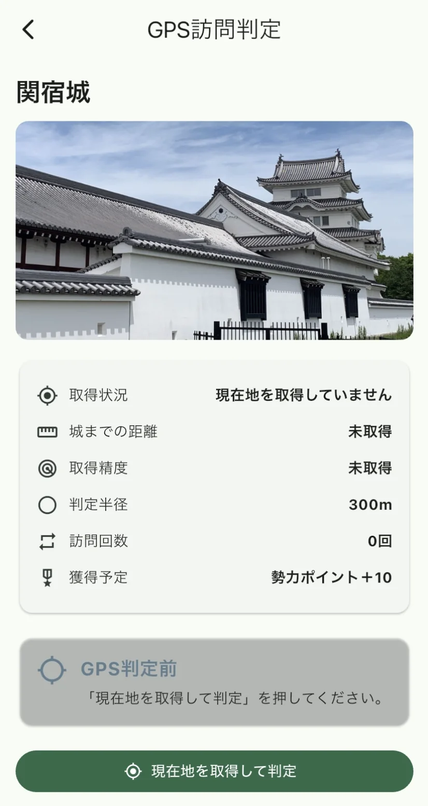
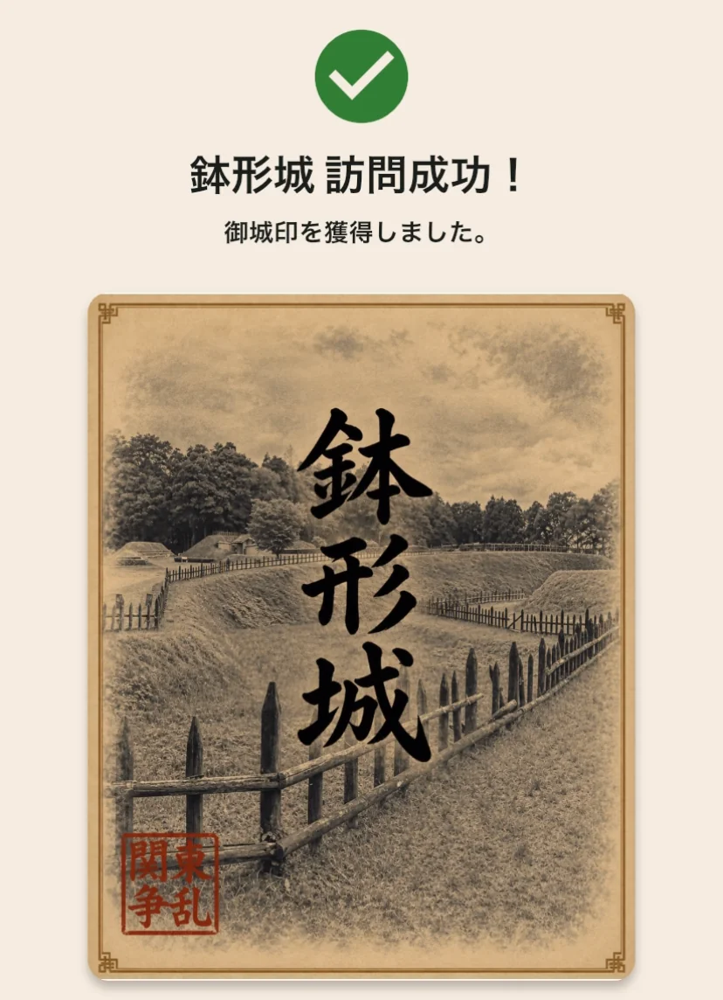
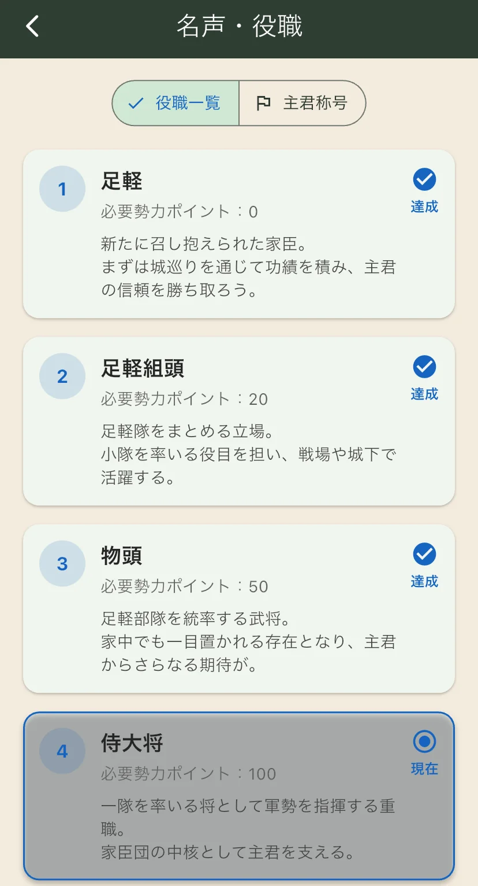
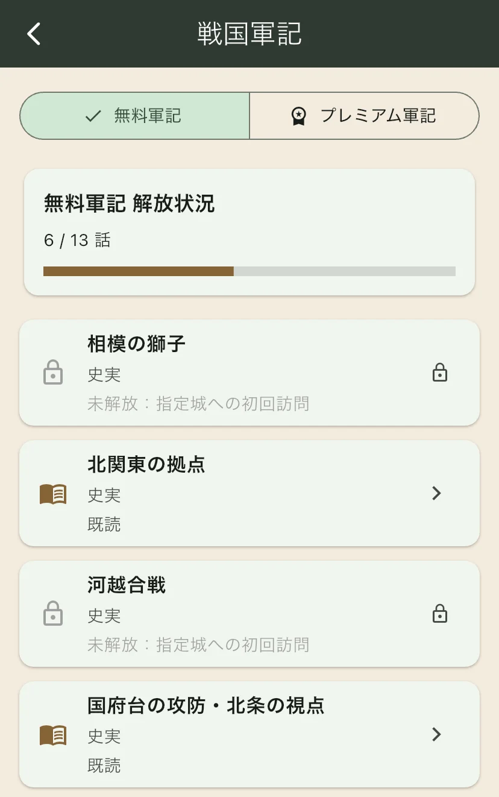
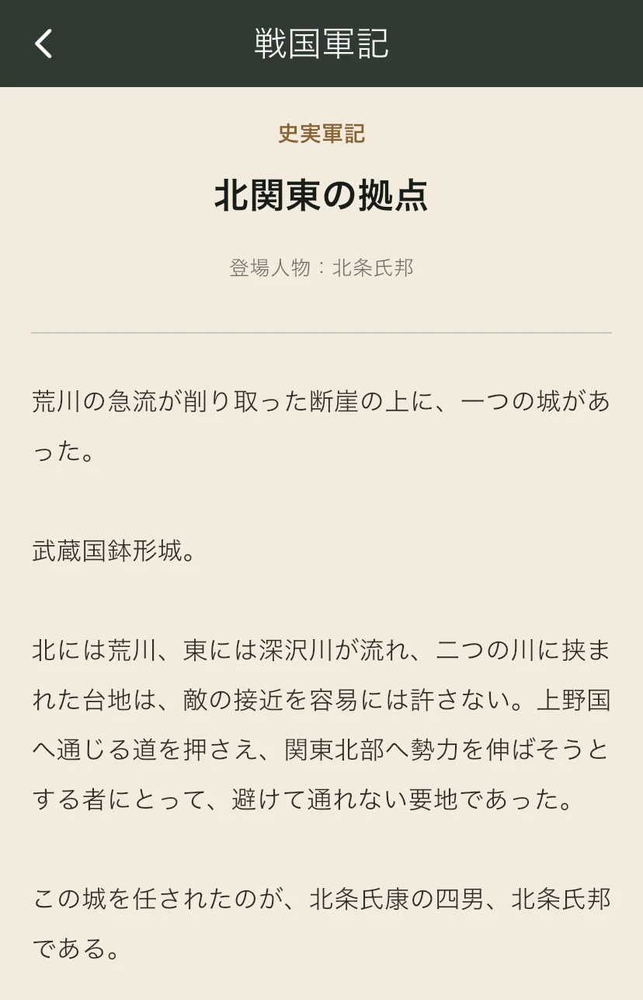
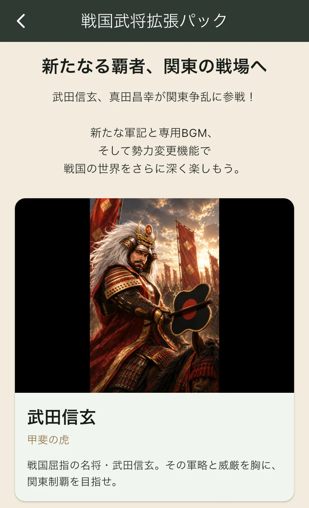
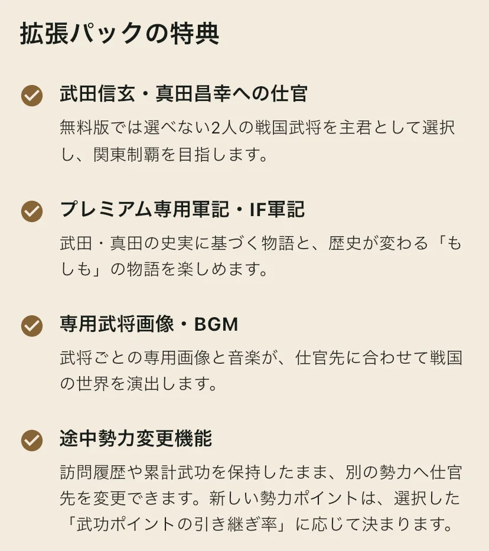

関東50城を巡る
城跡を訪問し、GPSによる訪問判定で攻略の記録を残します。
歴史と現地訪問をつなぐ、戦国城巡りゲーム。
城跡を訪問し、GPSによる訪問判定で攻略の記録を残します。
城への訪問を通じて御城印を集めます。
戦国大名に仕え、武功を積み重ねて役職の昇進を目指します。
歴史の出来事を描く物語と、もしもの展開を楽しめる軍記を収集します。
GAME FEATURES
城を訪れる体験が、御城印の収集、武功の蓄積、そして戦国の物語へとつながります。
関東各地の50城を実際に訪れ、GPSによる訪問判定で攻略記録を残します。城ごとに設定された判定範囲内で訪問に成功すると、武功や勢力ポイントを獲得。初回訪問は10ポイント、別の日の2回目訪問で5ポイントを獲得できます。
訪問を重ねることが、戦国の世界での成長につながります。

城跡への初回訪問に成功すると、その城に対応したデジタル御城印を獲得できます。城ごとに異なるデザインの御城印を集め、訪れた城の記録とともに保存。
実際の城巡りの思い出を、アプリの中（御城印帳）にも残していくことができます。

北条氏康や上杉謙信をはじめとする戦国武将に仕え、関東制覇を目指します。無料版では11勢力から仕官先を選択できます。
城巡りによって武功を重ねると、足軽から足軽組頭、物頭、侍大将へと昇進。さらに功績を積み重ね、最高位の「関東管領」を目指します。

戦国武将たちの決断、葛藤、激闘を描く物語。それが『覇城戦記』の中心コンテンツ「軍記」です。
ある特定の城跡を訪れることで、対応する史実軍記が解放されます。関東の覇権を巡って争った武将たちの歴史を、物語として読み進めることができます。
さらに、一定の条件を満たすことで、史実とは異なる展開を描いた「IF軍記」も解放。歴史上の選択が違っていたら、戦国の勢力図はどう変わったのか。もう一つの戦国の物語をお楽しみいただけます。


基本プレイは無料。追加購入の「戦国武将拡張パック」では、武田信玄と真田昌幸が新たな仕官先として加わります。
両武将に関連する専用の史実軍記・IF軍記、武将画像、BGMが加わり、関東争乱の物語をさらに深く楽しめます。
プレミアム購入者はプレイ途中で勢力を変更することも可能です。訪問履歴などの共通記録を保持しながら、選択した引き継ぎ率に応じて新たな勢力ポイントを設定できます。
追加購入価格：360円 （予定・公開前に販売内容を最終確認）


関東50城を巡る位置情報ゲーム『関東争乱 ～覇城戦記～』の公式PVです。
城巡り、デジタル御城印、戦国武将への仕官、そして史実とIFの軍記をご紹介します。
『関東争乱 ～覇城戦記～』の個人情報の取扱いや お問い合わせについては、以下をご確認ください。